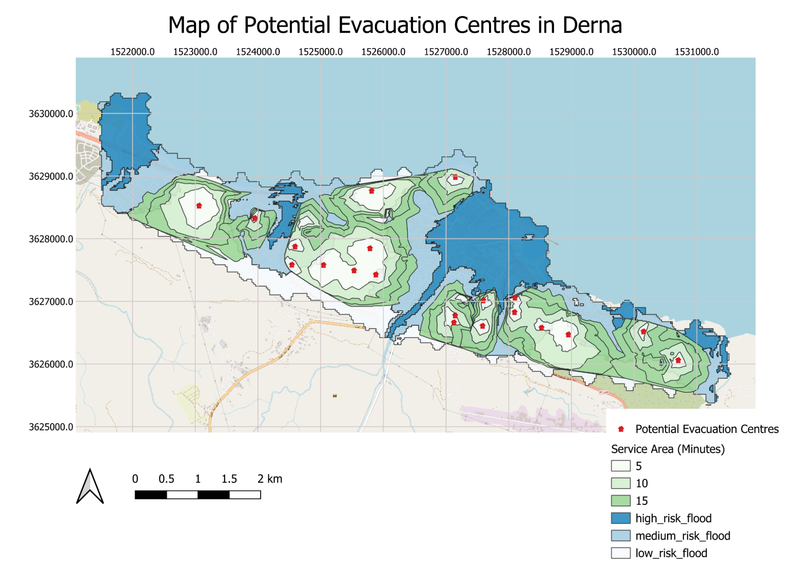
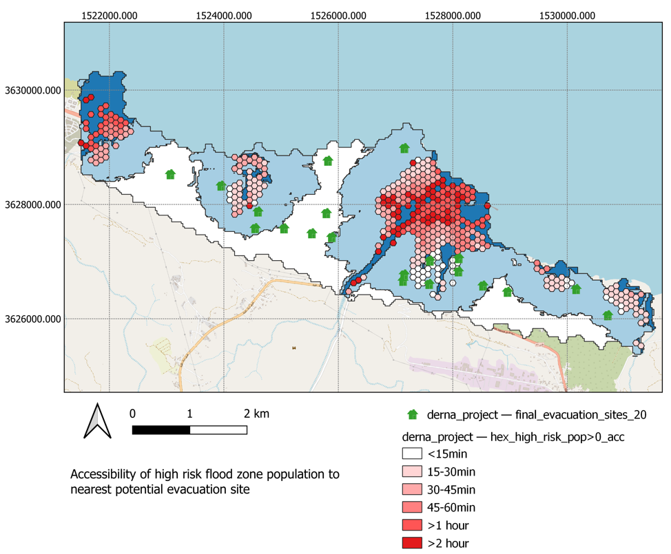
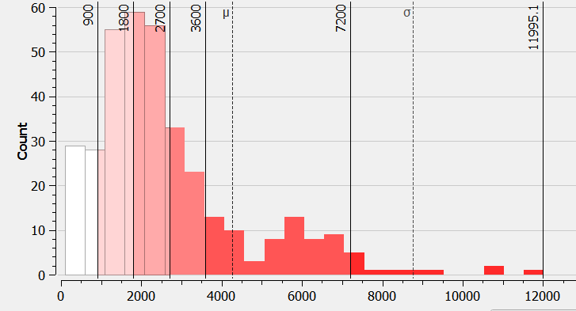
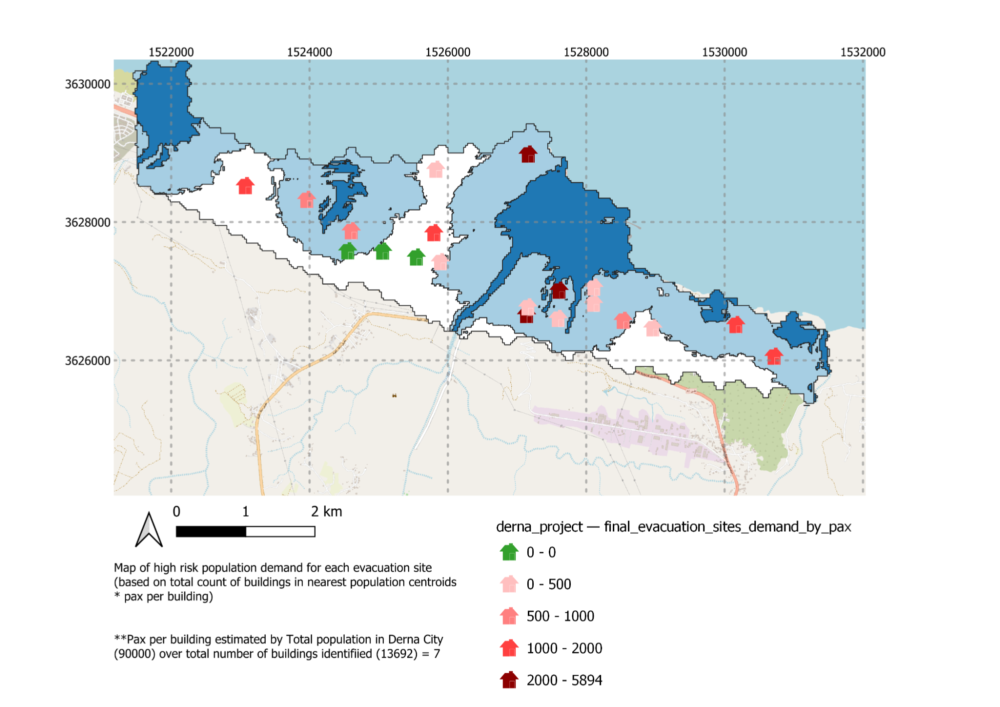
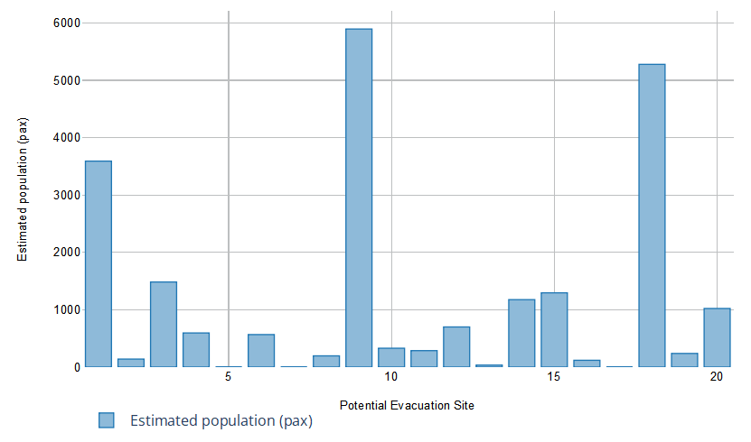

Results and Findings
Flood Prone Areas & Evacuation Sites

Taking into consideration the slope, elevation and proximity to waterways in Derna, the final map classifies the region into low, medium and high risk of flooding. The lightest shade of the blue has the lowest risks of flooding while the darkest shade of blue symbolises the highest risk. These factors are combined by AHP weights as follows:
| Slope | Elevation | Distance to river | |
|---|---|---|---|
| Slope | 1 | 1/2 | 1/3 |
| Elevation | 2 | 1 | 1/3 |
| Distance to river | 3 | 3 | 1 |
The elevation in Derna is lower along the coast. Therefore most of the coastal regions are medium or high risk flood zones. (>80%)
With the identified flood risk area, we identified 20 potential public facilities outside of high risk zones as potential evacuation sites
Service Area Coverage of Potential Evacuation Sites
Assuming a more severe flood condition where roads are inaccessible by rescuers from service area, these are the travel speed estimations for flood scenarios by walking:
| High Flood | Roads inaccessible = 0km/h |
|---|---|
| Medium Flood | Roads inaccessible = 1km/h |
| Low Flood | Roads inaccessible = 5km/h |
In the scenario of a flood, our 20 identified evacuation sites are able to serve majority of derna within 15mins by walking. However, there are places in Derna where the evacuation centres do not cover for lands identified as medium_risk_flood. This suggests a shortage of evacuation centres throughout Derna.
Based on our team's analysis, there should be much more evacuation centres built through Derna to ensure every resident is reached
Accessibility of Potential Evacuation Sites from High Risk Flood Area
The above map is an accessibility map of the population from high risk flood area (by buildings) to nearest evacuation centres (by time/distance) based on the classified walking speeds.
To simulate the scenario of a flood scenario, we classified the roads into respective speed limit conditions with the follow assumptions:
| High Flood Risk | Speed Limit = 1km/h |
|---|---|
| Medium Flood Risk | Speed Limit = 2km/h |
| Low Flood Risk | Speed Limit = 5km/h (average human walking speed) |
Speed estimations follow the assumption of a 30-50% reduction in travel speed due to flood conditions.
Based on the histogram shown below, the mode of accessibility by time is around 30 minutes, suggesting that the majority of the populated regions is able to evacuate within 30 mins to these 20 existing potential evacuation sites. This fits within the optimal time (30mins) suggested for emergency evacuation planning
In the worst case scenario of a flood, on average it is observed that population takes 1 hour and 13 minutes to reach nearest evacuation site. The longest time taken to reach nearest evacuation site is around 3 hours and 20 mins.
Based on the accessibility map, what is the population demand (estimated number of people to hold) for each evacuation site?
Bar plot of estimated population demand for each evacuation site based on total population estimated from nearest high risk population regions (hexagonal centroids) by time based OD Matrix Analysis.
Map of estimated population demand for each evacuation site based on total population estimated from nearest high risk population regions (hexagonal centroids) by time based OD Matrix Analysis
From the bar plot, we observe that the demand load for each evacuation site is rather unevenly distributed, where a few evacuation sites (ID 1 (university), 9 (mosque), and 18 (college)) are considered as nearest sites for a significantly high number of the population. Considering the approximate size of these buildings, it might be insufficient for the large demand.
Additional facilities will need to be identified or built to increase the supply of evacuation centres.
Additionally, we observe that evacuation site 5, 7, 17 does not seem to serve as a nearest evacuation site to any population region. This is as expected given their location being further away from the high risk zones. However, they can be considered for population regions that can reach them as second nearest sites so as to better distribute the demand load for the other sites.
Nevertheless, further analysis of the serving capacity of each evacuation site would be helpful to provide an effective distribution of demand across evacuation sites.
Recommendations
Structural:
Non-structural:
Extensions
Flood Risk Analysis
Service Area Adequacy Analysis: (Supply perspective)
Accessibility analysis: (Demand perspective)
In addition, time based accessibility analysis can be improved with consideration of elevation as well. https://plugins.qgis.org/plugins/walkingtime/
From a broader perspective, these insights can better inform insurance estimation of properties by considering these risk assessments. By consequence, with better awareness of these disaster risks amongst the population, it can better support the population's disaster preparedness and resilience.
References
- Flood risk and shelter suitability mapping using geospatial technique for sustainable urban flood management: a case study in Palembang city, South Sumatera, Indonesia https://www.tandfonline.com/doi/pdf/10.1080/24749508.2023.2205717
- https://www.mdpi.com/2220-9964/9/4/207 “The Central Disaster and Safety Countermeasures Headquarters and the National Emergency Management Agency of Korea have recommended a 30-minute emergency evacuation. Therefore, to extract the most feasible evacuation route, the routes with a total travel time of 30 min or less were selected as the optimal routes with optimal shelters. Thereafter, the optimal shelter was displaced based on the evacuation time, and the evacuation route was deformed according to the relocated shelter to create the flood evacuation map.”
- Adequacy of Flood Relief Shelters: A Case Study in Perak, Malaysia: https://www.e3s-conferences.org/articles/e3sconf/pdf/2018/09/e3sconf_cenviron2018_02016.pdf
- Health, place and Hanly: Modelling accessibility to hospitals in Ireland https://www.tandfonline.com/doi/abs/10.1080/00750770609555866 (“A weighted accessibility formula was applied to produce a measure of accessibility called a Spatial Accessibility Measure based on travel time, hospital size and population‐weighting.”)
- Flood evacuation and rescue: The identification of critical road segments using whole-landscape features https://www.sciencedirect.com/science/article/pii/S2590198219300223#f0035
- Walking Speed of Flood-Disaster Evacuations in Various Surrounding Conditions https://www.iahr.org/library/infor?pid=9379 (“The walking speed in the surrounding conditions was 30–50%lower than without the surrounding conditions”)
- Changes in travel behavior during flood events in relation to transport modes: the case of Metro Manila, Philippines https://www.sciencedirect.com/science/article/pii/S2352146520306189?ref=pdf_download&fr=RR-2&rr=825411a1f8454074